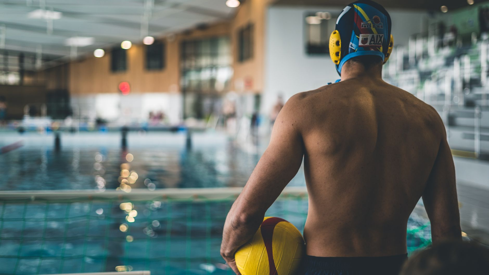

A Historic Win Worth Celebrating — and Learning From
USC Women's Water Polo recently made history by capturing their eighth national championship, cementing the program's place among the most decorated in collegiate sports. It is an extraordinary achievement that deserves recognition far beyond the pool deck in Los Angeles. For young athletes here in Wesley Chapel, Land O' Lakes, and across the greater Tampa Bay area, this moment is more than exciting news — it is a roadmap.
Championships at the highest level do not happen by accident. They are built over years of disciplined training, strong team culture, and a commitment to improvement that begins long before a player ever steps onto a college roster. Understanding what drives elite success can help youth players at every level approach their own development with greater purpose and intention.
Team Culture Starts Early
One of the defining characteristics of a dynasty like USC Women's Water Polo is the culture that surrounds the program. Elite teams do not simply collect talented individuals — they build environments where players hold one another accountable, celebrate each other's growth, and push through adversity together.
For young athletes in youth aquatic programs, this lesson is immediately applicable. Every practice, every scrimmage, and every early-morning workout is an opportunity to contribute to a team culture that either elevates or limits the group. Young players who learn to be great teammates — supportive, coachable, and competitive in the right spirit — are developing skills that will serve them throughout their athletic careers and well beyond.
Fundamentals Are the Foundation of Every Championship
It can be tempting to look at a national championship team and focus on the highlight-reel moments: the powerful shots, the acrobatic defensive plays, the dramatic overtime finishes. But what makes those moments possible is an unwavering commitment to the basics.
Elite water polo players are exceptional swimmers first. They have spent countless hours perfecting their eggbeater kick, their passing accuracy, their positioning, and their game awareness. Young players who invest in their fundamentals now are making deposits into a long-term athletic account that pays dividends for years.
- Strengthen your swim base: Every great water polo player is also a strong, efficient swimmer.
- Master your eggbeater kick: Elevation and endurance in the water begin here.
- Work on your passing and receiving: Clean ball movement is what separates good teams from great ones.
- Study the game: Watch elite matches and understand positioning, transitions, and set plays.
The Path to Excellence Runs Through Your Local Pool
For families in Wesley Chapel and Land O' Lakes, it is worth remembering that every player on that USC roster once started exactly where your young athlete is today — learning the basics, finding their love for the sport, and building the habits that would carry them forward. The journey to elite competition begins in community pools with dedicated coaches and driven young players.
At Nexar Aquatic Academy, we believe that every young athlete deserves structured, high-quality training that builds both the physical and mental foundation for long-term success. Whether your child is just discovering water polo or is working toward competitive goals, the lessons embodied by programs like USC's championship team are ones we work to instill every day.
Let This Championship Inspire Your Next Practice
The next time your young athlete climbs out of the pool after a tough practice, remind them that every great champion was once exactly where they are — tired, improving, and one workout closer to their goals. USC's eighth national title is proof that sustained effort and team commitment produce extraordinary results.
At Nexar Aquatic Academy, we are proud to help young athletes in the Tampa Bay area build the skills, character, and passion that make those results possible. Let this championship season be the spark that fuels your player's next great step forward.
Ready to get in the water?
First practice is completely FREE — no commitment needed.